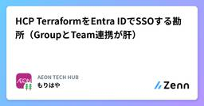

AEON TECH HUBのフィード
https://zenn.dev/p/aeonpeople
AEONグループのテックブログです！今後様々なグループ会社を巻き込みながらAEONのテクニカルな側面をお届けしていきます！（いきたい！）
フィード

HCP TerraformをEntra IDでSSOする勘所（GroupとTeam連携が肝）
AEON TECH HUBのフィード
はじめにこんにちは。イオンスマートテクノロジー株式会社（AST）でSREチームの林 aka もりはやです。当社ではIaCの実行基盤としてHCP Terraform（以降はHCPt）を利用しています。これまでHCPtへのログインはID/PW+MFAと、HashiCorp Cloud Platform（以降はHCPlatform）からのLinkログインを併用してきましたが、このたびEntra IDによるSSOへ切り替えました。基本的には公式ドキュメントに沿って設定すれば良いのですが、Entra IDのGroupとHCPtのTeamを連携させる部分はドキュメント通りでは意図した動きに...
8日前

Kubestronautの一員になりました！
AEON TECH HUBのフィード
はじめにこんにちは。イオンスマートテクノロジー株式会社（AST）でSREチームの林 aka もりはやです。このたび、Cloud Native Computing Foundation (CNCF) からKubestronautに認定頂きましたので報告ブログです。シンプルに報告＆所感を目的とした内容であり、取得のためのナレッジなどはあまり無いためこれから取得を試みる方向けの記事ではありません。執筆時点(2026-06-29)で世界で約4,000人、日本に限定すると約170人程度が認定されており、以下の公式サイトから概要やメンバーを確認できます。https://www.cncf...
1ヶ月前
GitHub CodespacesはEnterprise環境でのレビューや短期支援時に刺さるのでは
AEON TECH HUBのフィード
はじめにこんにちは。イオンスマートテクノロジー株式会社（AST）でSREチームの林 aka もりはやです。当社はGitHub Enterprise Cloud with Enterprise Managed Users（以降はGitHub EMU）を利用しており、SREチームとしてGitHubのEnterprise/Organization/Team/Repository、GitHub Copilot、GitHub Advanced Securityなど、GitHubまわりの幅広い領域を管理しています。本記事ではGitHubのWeb上で開発環境が立ち上げられるGitHub Co...
1ヶ月前
GitHub CopilotのTargeted model rules(Preview)の有効化で一時的にモデル選択が不可となった
AEON TECH HUBのフィード
はじめにこんにちは。イオンスマートテクノロジー株式会社（AST）でSREチームの林 aka もりはやです。当社はGitHub Enterprise Cloud with Enterprise Managed Users（以降はGitHub EMU）を利用しており、私たちSREチームはEnterpriseやOrganization単位でGitHub Copilotの設定を管理する機会があります。先日、社内から突然「GitHub Copilotのモデル選択が出来なくなった〜（涙）」と悲鳴が上がり、調査したところGitHub ChangelogでPublic Previewとして案内...
1ヶ月前
Azure PIMの承認通知を改善
AEON TECH HUBのフィード
こんにちは。イオンスマートテクノロジー株式会社 SREチームの川田です。今回は、過去にこちらで導入したAzure Privileged Identity Management（以下「PIM」）について、改善対応を行ったので備忘としてまとめます。PIM関連記事【Azure】 PIM申請時にMFAが強制されていなかった話と解決策 背景PIMを導入したことで、強い権限を常時持つ必要がなくなり、最小権限の原則に近づけたあとからPIMの昇格履歴や昇格理由も確認できるようになったなど、セキュリティ面の向上につながりました。PIMについてはこちらhttps://learn...
1ヶ月前
Azure ApplicationGatewayのPrivateLink経由でクライアントIPを制御する
AEON TECH HUBのフィード
こんにちは。イオンスマートテクノロジー株式会社(AST) SREチームの岩崎です。大分時間が経過してしまいましたが前回の記事(Azure ApplicationGatewayのPrivateLinkを使ってみる)の続きとなります。本記事はMicrosoft Learn（公式ドキュメント）と相違が生じる可能性がありますので、必要に応じて公式情報の Microsoft Learn を参照してください。前回の記事ではApplicationGateWayとは別のテナントから接続する方法として、Private linkを照会しました。今回は別テナントを他社とした場合、他社の全ネットワーク...
1ヶ月前
GitHub Copilot CLIの/chronicleで課金体系の変更に備えよう
AEON TECH HUBのフィード
はじめにこんにちは。イオンスマートテクノロジー株式会社（AST）でSREチームの林 aka もりはやです。先日5/25にFindyさん主催のイベント「GitHub Copilot CLI を装備せよ 〜実践テクニック共有会 LT Night〜」に参加してきました。https://findy.connpass.com/event/391200/イベント名の通りGitHub Copilot CLIに関して総勢10本のLTが行われ（私も1本を受け持たせてもらいつつ）面白さとナレッジの溢れた良い場になっていました。そんな中でも10本のLTのうち4本かそれ以上で取り上げられていたのが...
2ヶ月前
【Azure】PIM申請時にMFAが強制されていなかった話と解決策
AEON TECH HUBのフィード
こんにちはイオンスマートテクノロジー株式会社 SREチームの川田です。弊社では Azure Privileged Identity Management（以下「PIM」）を用いて特権ロールを一時的に（Just-In-Time）で払い出しています。今回は、MFAを必須化する過程で得た知見について書いていきたいと思います。 背景PIM導入時に、設定で「有効化時に多要素認証を要求する」を有効にしており、MFA強制はできていると思っていました。ところが実際に使っていると、PIMでロールをアクティブ化する時にMFA認証が求められていないことに気づきました。（気付くまでに時間がかかって...
2ヶ月前
AkamaiのDevice CharacterizationでPC/スマホ/タブレットごとにCDNキャッシュを分ける
AEON TECH HUBのフィード
はじめにこんにちは。イオンスマートテクノロジー株式会社（AST）でSREチームの林 aka もりはやです。本記事ではAkamaiのProperty ManagerにおけるDevice Characterization Behaviorを利用し、PC/スマートフォン/タブレットごとに異なるCDNキャッシュを返す方法を紹介します。当社ではCDN/WAFの機能にAkamai社のサービスを採用しています。サービスを運用していると「同じURLでもデバイスによって出し分けたいのに、Akamaiのキャッシュは1種類しか持っていない」というケースに遭遇することがあります。たとえばOrigin...
3ヶ月前
Akamaiを利用したメンテナンスを時間ピッタリに開始する方法
AEON TECH HUBのフィード
はじめにこんにちは。イオンスマートテクノロジー株式会社（AST）でSREチームの林 aka もりはやです。本記事ではAkamaiのProperty ManagerにおけるCriteriaのTime Intervalを利用し、メンテナンス画面への切り替えを「指定時刻ちょうど」に開始する方法を紹介します。当社ではCDN/WAFの機能にAkamai社のサービスを採用しています。Akamaiは非常に強力で頼もしい一方、Propertyの設定変更を本番環境に反映するにはアクティベーションの時間が必要です。通常の設定変更であれば数分程度の反映待ちは大きな問題になりません。しかし、計画メン...
3ヶ月前
GitHub Copilotで既存リポジトリを段階的に改善する
AEON TECH HUBのフィード
はじめにこんにちは。細々とプログラミングをしている sotanengel です。この記事ではMicrosoftさん主催の「プロンプトで差がつくGitHub Copilot：機能別 "効く指示 /ダメな指示" 徹底解説」で講演した内容をブログでもまとめて紹介します‼️https://msevents.microsoft.com/event?id=3815209750 講義で利用したサンプル今回のセミナーで使ったサンプルは、テストもリンターもCIもない状態のFlask APIです。# app.py - FlaskベースのタスクAPIfrom flask import F...
3ヶ月前
ASTあされん -始業後30minリレー勉強会を10回まわして見えたこと-
AEON TECH HUBのフィード
はじめにこんにちは。イオンスマートテクノロジー株式会社（AST）でSREチームの林 aka もりはやです。普段はSRE業務に携わっていますが、社内外への当社のモチベーション向上といった活動も行っています。こうした取り組みが最終的に良い仕事につながると考えており、今年の当社のMVVは “Everyday Miracles” でもあります。 TL;DR”ASTあされん”と称して始業後の30minを利用してリレー式の勉強会を実施AI活用から小売のドメイン知識まで幅広いテーマでディスカッションが行われた毎月はさすがにしんどいが、定期的にやっていきたい取り組みとなった ...
3ヶ月前
Golden Kubestronautに認定されました
AEON TECH HUBのフィード
イオンスマートテクノロジーの DevSecOps Divの さいとう です。このたび、Cloud Native Computing Foundation (CNCF) から Golden Kubestronautに認定頂いたので色々書いていこうと思います。Kubestronautに認定された時の記事は以下です。https://zenn.dev/aeonpeople/articles/74a5ba758fe909 Golden KubestronautとはGolden Kubestronautとは、Kubestronaut（CKA、CKAD、CKS、KCNA、KC...
3ヶ月前
PagerDuty Challenge Cup 2026 参加レポート
AEON TECH HUBのフィード
こんにちは。イオンスマートテクノロジー株式会社（AST） SREチームの川田です。4月15日に開催された PagerDuty on Tour 2026 の企画のひとつ、「PagerDuty Challenge Cup 2026」に参加しました！インシデント対応力を競うという貴重な体験ができたので、本記事ではその当日の流れと、実際に感じた学びをまとめます。 PagerDuty Challenge Cup 2026とはハッカソンは開発力、GameDayは運用力。では、インシデント対応力を競うコンテストは？——それがPagerDuty Challenge Cupです。PagerD...
3ヶ月前
TiDB Cloud vs Azure MySQL — 二週間の性能比較実験記
AEON TECH HUBのフィード
イオンスマートテクノロジー ASPB開発チームのTIAN ZEHANと申す。初めてこのような場に筆を執ることになったが、どうかご容赦願いたい。まずASPBとは何かを述べておかねばなるまい。ASPB——AEON Smart Platform Businessの略称である。iAEON、おうちでイオン イオンショップ、おうちでイオン イオン九州ネットスーパー、イオン琉球オンラインショップといったフロント製品の裏側で、業務機能をマイクロサービスとして束ね、APIで提供する基盤である。オンラインとオフラインを横断するイオンのデジタルサービスの、いわば背骨のようなものだ。私はこの基盤上でシステム開...
4ヶ月前
イオンシネマでイベント「シネマ de LT会#2」をDELTAさんとヘンリーさんと開催しました！
AEON TECH HUBのフィード
はじめにこんにちは。イオンスマートテクノロジー株式会社（AST）でSREチームの林 aka もりはやです。本記事はイオンシネマ シアタス調布で開催したイベント「シネマ de LT会#2 〜Back to the Screen〜」についての運営レポートです。なお当日の各セッションへの感想については”前回に続き今回も”keitaさんの以下ブログが全体をよく捉えているのでご紹介します。keitaさんへはちょっと前に流行した「ブログ枠」みたいな称号を送りたいです、連続参加＆ブログ執筆に感謝！！https://note.com/keitafukui/n/n433b49c2ce22?...
4ヶ月前
Azure Backupが使えないPremium BlobをAzure Storage Moverでバックアップする
AEON TECH HUBのフィード
はじめにこんにちは。イオンスマートテクノロジー株式会社（AST）でSREチームの林akaもりはやです。本記事はAzureのマネージドストレージであるStorage account（以後SA）のうち、Azure Backupを適用できなかったAzure Blob Storage（パフォーマンス: Premium）のデータに対して、Azure Storage MoverとGitHub Actionsを組み合わせた定期バックアップ運用の紹介です。先に明記しておくと、Azure BackupはAzure Blob Storageのバックアップに対して基本の選択肢です。Microsoft...
4ヶ月前
Dailyコスト通知によるコスト意識強化
AEON TECH HUBのフィード
こんにちは。イオンスマートテクノロジー株式会社 SREチームの川田です。今回は、社内全体のコスト意識を強化するために対応したDailyコスト通知 について、導入して感じたことを備忘としてまとめます。 背景普段なんとなく使っているAzureには、実は莫大な費用がかかっています。SREチームでは、Azureコストの管理・削減のためにさまざまな取り組みを行い、日々コスト削減を実行してきました。 SREチームの過去の取り組みAzure Storage accountsのオプション変更で年間2,000万円以上のコスト削減を達成しましたAzure異常コストアラート：犯人はRe...
5ヶ月前
GitHub Copilot CLIへAbout GitHub Copilot CLIを読みながら入門する
AEON TECH HUBのフィード
はじめにこんにちは。イオンスマートテクノロジー株式会社（AST）でSREチームの林 aka もりはやです。ついにGitHub Copilot CLIが2026/02/25にGAしました。私はプレビューの段階で少し触りましたが、なんやかんやVSCodeでGitHub Copilotを使うことが大半でした。本記事ではGAを機に本格的にGitHub Copilot CLIを触っていこうと考え、この記事を書きながら入門してみます。＊そのため、しっかりと検証したものではなく、想定と感想を多分に含んだ内容です。参照するのは公式の「About GitHub Copilot CLI」です...
5ヶ月前
GitHub CopilotのSkillsは手順書だ：3桁行差分の大規模Terraform移行に使い回す
AEON TECH HUBのフィード
はじめにこんにちは。イオンスマートテクノロジー株式会社（AST）でSREチームの林 aka もりはやです。本記事ではGitHub Copilotの「Skills」と呼ばれる機能について、私たちJTCやEnterpriseの文脈で捉え直した結果「要は手順書ですね」と捉えることで複雑なTerraformの移行を再現性のある形で進められるようになった話を紹介します。ポイントは「Skills」ってカッコ良い表現よりも、「AI用の手順書じゃん」と捉えることで利用の敷居が大幅に下がったという点です。 TL;DRSkills、Custom-instructionなんて言葉に惑わされて...
5ヶ月前